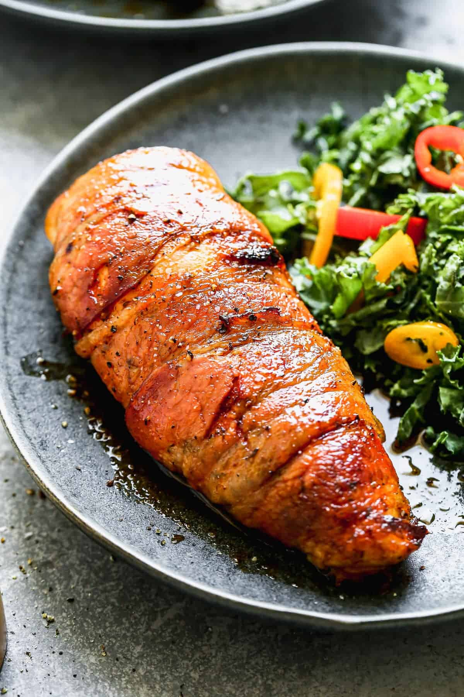

Bacon Wrapped Chicken Breast
Home

Description
An easy Bacon Wrapped Chicken Breast recipe, marvelously juicy, temptingly tender.
Ingredients
- 1 tbsp olive oil
- 1/2 small yellow onion, minced
- 2 cloves garlic, minced
- 6 oz cream cheese, at room temperature
- 2 tbsp finely chopped chives
- Kosher salt and freshly ground black pepper
- 4 6- to 8-oz boneless skinless chicken breasts
- 12 slices bacon (not thick-cut)
Steps
- Preheat the oven to 375 degrees F. Heat the olive oil in a medium skillet over medium heat. Add the onion and cook, stirring, until golden brown, about 6 minutes. Stir in the garlic and cook 30 seconds more. Remove the pan from the heat and add the cream cheese, chives and Worcestershire sauce and stir until evenly combined. Season the filling with salt and pepper.
- Halve each chicken breast horizontally, leaving it attached at one side so it opens like a book. Sprinkle the chicken with salt and pepper, then divide the filling among the breasts, spreading it evenly on the inside of each. Close the chicken breasts and sprinkle the outsides lightly with salt and pepper.
- Lay 3 strips of bacon side-by-side on a cutting board and position a chicken breast right-side-up at the end of the strips. Tuck the thinner "tail" of the chicken breast underneath for even cooking, then roll the breast up in the bacon. Repeat with the remaining bacon strips and chicken breasts.
- Set a cooling rack in a rimmed baking sheet and transfer the chicken breasts with the bacon seam-side down to the rack. Bake until the chicken is almost cooked through and an instant-read thermometer inserted in the middle of each breast reads 155 degrees F, about 35 minutes. Heat the broiler and broil the breasts until the bacon turns golden brown and crisp, about 5 minutes. Serve hot.